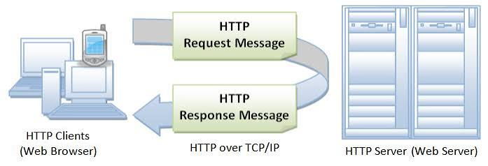

Introduction
This website is my class project for IT 3203 – Web Development. It covers HTTP basics, evolution, key concepts, references, and a self-assessment quiz.
Key Terms
- HTTP
- Request
- Response
- Client
- Server
Table of Contents
HTTP Diagram

HTTP Versions Comparison
| Version | Description |
|---|---|
| HTTP/1.0 | Basic web communication |
| HTTP/1.1 | Persistent connections |
| HTTP/2 | Improved speed and performance |
| HTTP/3 | Uses QUIC for faster communication |